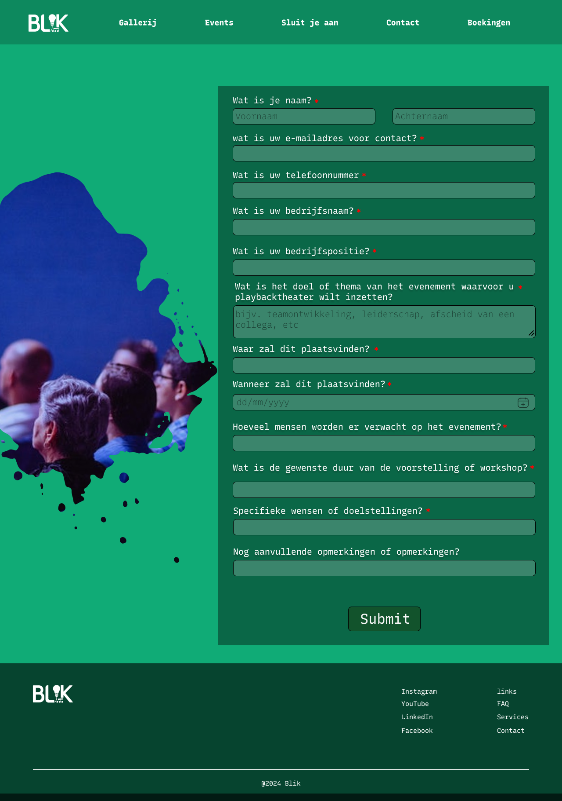
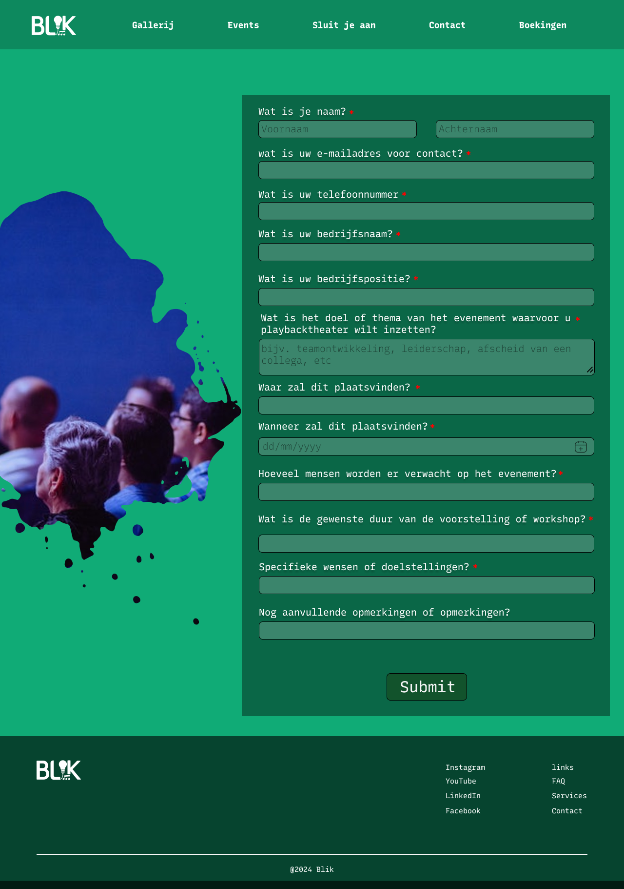

At first, I had questions made on Google Forms but after some feedback I changed the questions asked to fit better for the target group of companies, event organizers and private individuals. Also, the structure on how the survey should be answered as at first majority of the questions would needed to be answered openly as I was assuming that the answers were be more descriptive than a simple one to two word answer because I was first aiming to theatre enjoyers as the target group. From then on I switched to google forms to make more multiple choice questions, and likert scale type questions, to have the survey takers be more engaged with simple clicks and images.
Target Demographic: The target audience is mainly 25-35-year-olds, with a large portion working as finance officers.
Familiarity with Playback Theatre: Most respondents were unfamiliar with Playback Theatre, underscoring the need for content that explains the concept clearly and emphasizes its benefits to potential clients.
Content Strategy: The preferred content types are highlight reels, behind-the-scenes content, and promotions for upcoming events. These will form the core of the client’s social media strategy, with a recommended posting frequency of twice a week for optimal engagement.
Visual and Website Preferences: Respondents favored website content that includes show details, booking rates, and the group’s mission and values. They preferred imagery of emotional moments from performances and group photos of actors interacting with the audience, reflecting the essence of Playback Theatre.
Colors and Fonts: Dark, moody colors were associated with deep emotions, though it would be better to align color and font choices with the client’s core values.
Booking Motivations: Emotional impact and team-building benefits were identified as the primary factors influencing booking decisions.
Social Media Preferences: Instagram and Facebook are the most used platforms by the target audience. Posts will be scheduled for evenings when engagement is highest, focusing on these two platforms.

 
